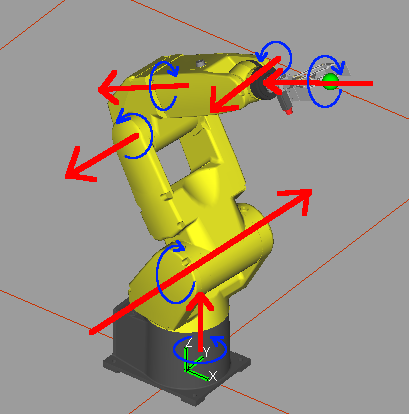
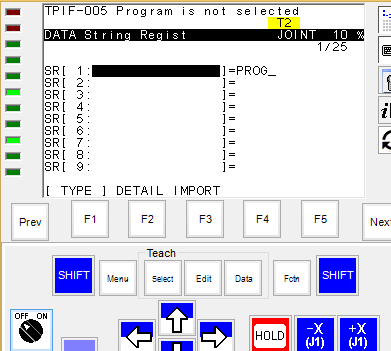
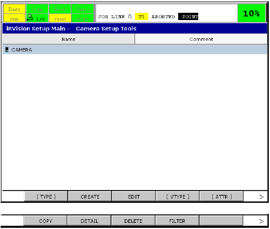
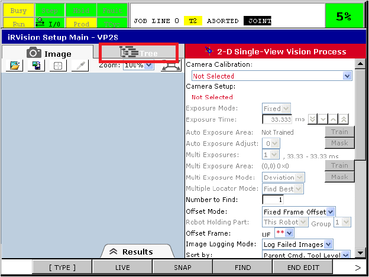
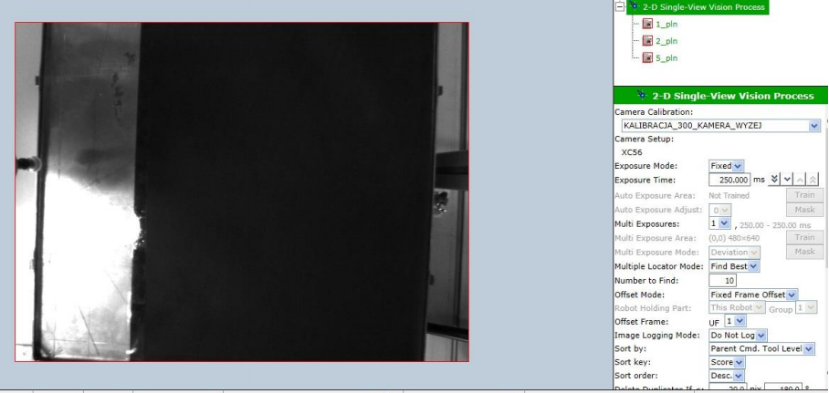
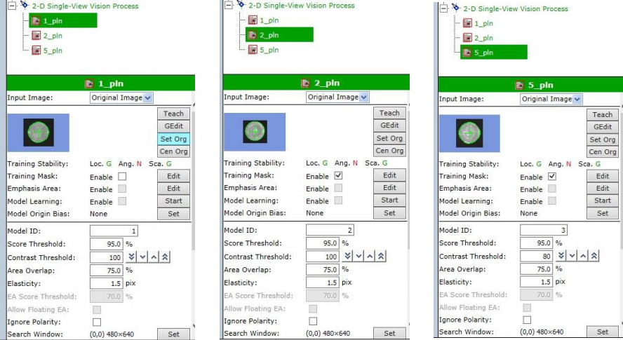

Let's start with a video, presenting the final result:
Abstract
Idea behind this project was to present FANUC's vision system - iRVision. When starting this, I didn't even suppose
that there'll be so much interesting stuff to learn! In this short series, I'll present all the steps required to set up a FANUC robot
to collect coins. Here goes table of contents:
Theoretical introduction. First steps with robot and iRVision.
1. Theoretical introduction. First steps with robot and iRVision.
1.1. FANUC LR Mate 200iD
1.1.1. Technical characteristics
Figure 1 - robot's workspace
On the above figure we can see robot's dimensions. The workspace resembles hollow ball of 1.2m diameter. The robot itself isn't
big - in the position as on the figure it's less than 1m tall, so it might be used in small applications for various tasks
which depends only on the tool used. The controller for this specific robot is R-30iB. Machine weights about 25kg and the max
load capacity is up to 7kg (about 30% mass of the robot itself!). Repeatability of the robot equals +/- 0.02mm. As per specification,
max reach of the robot is 717mm. Full joint specification is presented in the table below:
Figure 2 - joints specification
1.1.2. Robot structure

Figure 3 - kinematic chain compliant with D-H notation
Figure 4 - axis from drawing 3 shown on robot (Z0 - Z5)
Robot is of redundant type, with 6 degrees of freedom (we've got 6 steerable axis). We can reach desired position
by various means, for example manipulating joints in JOINT steering mode.
1.2. Working with the robot
1.2.1. iPendant
Steering, programming, making back-ups and all communication with robot is done using iPendant.
It's equipped with 3-state safety switch behind the housing, which cuts the supply voltage for servo motors. In order to keep
the robot moving, we've got to keep the deadman switch depressed.
Figure 5 - iPendant
Figure 6 - how does it look in ROBOGUIDE - simulator software (older version of controller)
To steer the robot manually (so called 'jog'), first you should choose coordinate system in which the steering will
be done (it's very important, because for example we can create our own coordinate system ('user frame') with Z global axis
pointing in the opposite direction to the WORLD Z axis - if we forget about it, we can accidentally hit the table). You can change the
coordinate system by clicking COORD button while pressing SHIFT - then you can choose the system by clicking F1-5 buttons. You can choose
between WORLD, JOINT, TOOL, USER - more about those later. If we've got the coordinate system chosen, we can start servos. When holding
SHIFT, we should press one of the buttons (which one? it depends around which axis and joint we would like the robot to turn)
on the right side of the iPendant. From the iPendant, we also create new programs, new coordinate systems (frames), we may turn
digital outputs of the robot HIGH/LOW, we read/write register values. Current configuration and position is also displayed, as well as
alarms and many, many more. If the robot has got some add-ons installed (for example, iRVision), this functionality will also be controlled via
iPendant (continuing iRVision, the whole vision process will be controlled from iPendant).
1.2.2. Coordinate systems
The most important matter when working with robot (whichever FANUC robot) is to understand what coordinate systems
(so called frames) we can use.
The very basic, simplest frame is the global coordinate system (WORLD frame), which zero is located at second's link level
(Z1 on figure 3, to simplify internal calculations). This is a frame delivered from "factory". +Z axis points 'up', +X goes straight
'ahead', +Y goes 'left'. When moving the robot in this frame, the software calculates what should be the angles between links in order for
the tool to reach a specific XYZ point in this imaginary cube. This is the green coordinate system on figure 4.
Another frame - USER TOOL (UTOOL, TOOL frame) - this coordinate system is related to the effector. This system should be determined
for every new tool we're mounting.
Figure 7 - UTOOL
On the figure above (figure 7), the green system (in the center of the gripper) is the UTOOL. When moving in the
+Z direction of the TOOL frame, the midpoint of the gripper is going to move according to the Z axis direction
on the figure 7. The UTOOL determination is done with the help of so called 3-point method:
We select a reference point in the workspace, for example a pointer mounted on the table.
We set TCP (tool center point) so that it's in this reference point in as twisted configuration of joints as possible.
We need to find at least 3 such configurations. The controller will then calculate our UTOOL.
We should switch the coordinate system to UTOOL and make sure that it's been calculated correctly!
Alternatively, if the tool is some pointer or a pencil, then we can measure the length of the tool and input the measured Z value
using Direct Entry method.
iPendant keys
One might be wondering why there's so many buttons on the pendant to steer the robot - up until now we've been
only talking about positions, but obviously, we're also interested in orientation. The second set of keys
(in appropriate frame, of course) is resposible of tool's orientation (roll-pitch-yaw angles)
When steering in the JOINT frame, we're controlling angles between links directly. First red arrow on figure 4. corresponds to
J1 on iPendant, second is J2 etc. So, for example, if we want to turn around the global Z axis (around the robot's own axis), first
we have to hold SHIFT, choose COORD -> JOINT (using F keys) and then either +X or -X (depending on whether we want to turn right or left).
We've to remember about pressing the deadman switch, because otherwise servos will not operate at all.
Last frame we'll be analyzing is the USER FRAME. This one is defined by us - we'll be adding many custom frames in which
the robot will be working. It might be useful for example when we've two palettes next to each other, rotated a little, and
our task is to move boxes from one palette to another.
Figure 8 - two user frames, one taught point
We're defining one user frame, associated with the first palette (red). We're also defining second user frame,
associated with second palette (green). Next, we position the robot so the TCP is in pont P(X1,Y1,Z1). We save to position
in appropriate register (PR[n] - more about registers in the next chapter). Now, if we want to take the box we go to the
taught point and close the gripper. In order to put the box onto the second palette, we switch the frame to the one
associated with the green point and move to the same taught point as before! The robot will calculate the necessary delta
(offset) and will go to point P'(X2,Y2,Z2) in the new coordinate system. We may also control the robot in JOG mode in USER frame,
We select the active frame (Menu -> Setup -> Frames -> SETIND (F5) -> [frame number] -> ENTER) and then we move as in a global coordinate
system. For example on figure 9, if UFRAME_NUM = [number of green frame], then going in the +Y direction, we'll be moving the robot's TCP
along the left edge of upper palette.
We can define a USER frame using for example a 3-point method:
We move the TCP to the point, which is gonna be the zero point of our coordinate system (orient origin point).
Then, we move the TCP somewhere along our X axis (X direction point)
Then, we move the TCP somewhere along our Y axis (Y direction point)
It's very important that those points are as distant as possible - the offset will be calculated more precisely.
The Z axis will be defined automatically, according to the right-handed screw rule. It's worth to remember
that, because we may define X and Y axis so that the Z axis will be in the opposite direction to the global Z axis - it's better
not to confuse those two when steering the robot manually.
1.2.3. Registers
When creating a TP program, we may use several types of registers depending on the data type we'll be storing. Good analogy
for the registers are variables from other programming languages as C/C++. Next to the register's number we may add a comment
which will describe the variable kept in the register.
Basic register type, R[n] registers, are used to store numerical values. In such register we can store a temporary
result of some calculations (for example, in some more complex calculations) or some process parameters (eg. spacing between
boxes/height of a box/safety buffer when approaching a box etc.), which will be shared between all programs/subprograms.
Good example is a FOR loop, which stores current value of the iterator inside a R register.
Figure 9 - 'R' registers
In PR[n] (Position Register) we store particular robot's positions (position + orientation) which are interesting for us.
When we store a position in a PR register, after chaning the user frame, this position will be moved by the offset
(look on the example above, figure 8). We modify the register's value by moving the robot to the desired location, and then we click
SHIFT + RECORD. We can go to the stored position by using MOVE_TO (we have to remember, than if we store a coordinate in a particular
user frame, then if we later on modify the frame, robot will go to this point, but in this new coordinate system!).
Figure 10 - 'PR' registers

Last set of register, SR[n] (String Register) is a set of registers
to store character strings. It may be used to calling subprograms indirectly - we call subprograms PROG_1, PROG_2 and PROG_3,
and then for example we want to execute them in a loop.
SR[1] := 'PROG_'
FOR R[1] = 1 TO 3
SR[2] = SR[1] + R[1]
CALL SR[2]
ENDFOR
Figure 11 - 'SR' registers
1.2.4. Basic instructions
TP program is created on iPendant, using available instruction set. We can divide instructions to those, associated
with moves, program flow and frames control. We can also assign values to registers and much, much more.
There are few instructions which are used to move the TCP around:
Figure 12 - L instruction example
We can approach a particular point in space going in a straight line (L), a curve (C) or as quickly as possible in joints (J). Destination can be either
stored in a position register or we can approach a point of interest and while writing the TP program we can click SHIFT + F1 to memorize the position (only valid in this program).
If the movement type is C (either Curve or Circular, not sure), then we have to specify intermediate point and destination. Last parameter, "precision" - here we can choose either FINE or CNTnnn,
where nnn is a number between 0 and 100. We specify whether the robot should approach this position as FINE as possible (even with correction if necessary) or just go through the point, forgetting about micrometer
precision (eg. some intermediate point in order to approach some elevation, in order to avoid collision).
To control the program flow, we've got instructions as IF, SELECT, FOR/ENDFOR at our disposal. Subprograms are called by using CALL command. We can jump to a specific place (label, LBL) in the code (for example,
when using IF instruction) by using JMP LBL[...] command. Instructions will be described by analysing example program. The task is as follows: we've got two palettes, one of which is on elevation - we have to move boxes
from the lower palette to the upper one (figure 13).
Figure 13 - example layout for our problem
We'll assume here that we've TOOL FRAME defined already. First thing we should do here is set up a proper user frames, associated with the source palette and the destination palette (please refer to chapter 1.2.2. Coordinate systems, figure 8).
If the frames are set properly, we select source frame as the active frame and approach the first box like we would want to catch the box and the only thing missing is closing the clamps. We store the position
in PR register (PR[1:box_ref]). In another PR register (PR[2:safe]) we save intermediate position between two palettes, so that taking/laying boxes down is done without any collisions. Next, we store characteristic values
for our process in R registers:
Spacing between boxes in X axis: R[1:spacing_x] = 50
Spacing between boxes in Y axis: R[2:spacing_y] = 60
Boxes in a row (X direction) count: R[3:qty_x] = 3
Boxes in a column (Y direction) count: R[4:qty_y] = 4
Safety buffer when approaching a box: R[5:buffer] = 20
GO_TO_SAFETY will change the frame to WORLD and will move the effector to intermediate position stored at the beginning so that we do not hit anything:
1. UFRAME_NUM = 0
2. L PR[2:safe] 100mm/sec CNT100
What hasn't been mentioned earlier - we can call subprograms with parameters - from within the called subroutine we can access them
by addressing AR[n] register, where n is the number of parameter on parameter's list. We're using FOR loop to iterate over all boxes on the palette - inside the loop we're calling subroutine
WORK_THE_BOX, passing "coordinates" of a box with the UFRAME number in order to identify whether we'll be picking up or dropping the box. Most important instruction: PR[n: m] = PR[k: b] + R[a], which allows us
to add offset to a particular axis - such a point can be then used in L or J instruction. We're using FINE precision when we're either picking or dropping the box, but when we're just crossing a point, then the movement is
of CNT type. GO_TO_SAFETY has been extracted to another procedure because we're switching to WORLD frame in order to go to safe, intermediate position - this way we don't have to store the position in PR register, but instead
go to the point in whatever frame and teach the robot using POINT instruction when writing the program.
1.3. FANUC 2D iRVision
1.3.1. Basic information
FANUC iRVision consists of 2D/3D vision, paletization, line tracking and many, many more. Nevertheless, for the project, only 2D vision will be interesting for us. The rest of this theoretical introduction
will be dedicated to 2D vision description.
Additionaly, there are two ways to attach the camera in the whole robot-camera system: with camera fixed (fixed frame offset) or with camera mounted to the effector (tool offset). Again, we'll only be analysing
configurations, where camera is fixed.
We've been learning about frames already. iRVision introduces a new type of frame: offset frame. This is a very important frame, in which we'll learn the robot the reference point of the element. Next, in order
to calculate offset after localizing the reference, we won't be calculating it point-by-point - instead, we'll move the entire offset frame so the detail's coordinates do not change.
Figure 14 - offset frame
Generally, the iRVision process creation looks as follows:
Figure 15 - creating vision process
I'll try to describe the process as precisely as possible, with analysis of every step.
1.3.2. Adding a camera
To add a camera, we click Menu -> iRVision Setup -> Vision Setup. A window should appear, from where the whole work can begin. We choose [VTYPE] -> Camera Setup Tools.

Figure 16 - camera setup tools
In order to add camera, we click CREATE and specify name of our new camera configuration, optionally a comment and last but not least - type. Vision supports only few types of cameras, among which there's KOWA Digital Camera or
Sony XC-56 CCD Camera. We choose a camera which we're using, obviously. Considering that our camera is only a gray-scale camera, the result should be as below (type might differ, as well as sharpness, which can be adjusted by
winder):
Figure 17 - adding a camera
Here we also specify if the camera is mounted on the effector or fixed (marked with red rectangle on figure 17). Exposure time is not the same as exposure time specified later on in the process - here it's only for presentation
purposes so that we can see actual image and make some adjustments - later on, when creating the process, we'll be setting exposure time used in the process.
It's worth mentioning here that we've got some interesting options in the menu: LIVE option, which allows us to refresh the camera view constantly (for example, when we want to set up
the calibration grid), where SNAP option will just shoot a picture and refresh the image. It'll be used later on, to teach the pattern.
When everything is set up correctly, we click SAVE, then END EDIT. Next step will be camera calibration.
1.3.3. Calibration
This is the most important part in the vision process in order for the robot to localize elements correctly. It's very important to catch proper sharpness,
illumination of the scene and well-defined frame. We'll be calibrating the vision using calibration grid (Grid Pattern Calibration). We'll also talk a little about automatic calibration (Robot Generated Calibration).
We go to Vision Setup -> [VTYPE] -> Camera Calibration Tools. We click CREATE. We should name our calibration somehow and choose correct type (Grid Pattern Calibration). We should see something similar to figure 18:
Figure 18 - grid pattern calibration
Initially, we can only see a red background under calibration type - this means that there are some errors or not everything is configured properly. Every parameter is very important, thus we'll
describe them step by step:
Robot to be offset - robot, which will be working with the camera - we'll have just one
Application frame - very important thing - we have to prepare the UFRAME before starting the calibration. If we finish the calibration and this frame changes, then we'll have to re-callibrate the camera once again.
It defines to which frame the pixels should be mapped to milimeters.
Camera - we choose the camera created one chapter earlier
Exposure time - very important parameter, which regulation will cause scene illumination/shadowing. We should adjust it so there's least possible number of overexposures/underexposures and the contrast
to be the best as possible - we can clearly see it on calibration grid. Later on we'll be setting up exposure time used in the process. This one is only used for calibration.
Grid spacing - spacing between dots on the calibration grid. This one has got a big influence on the final effect of calibration.
Number of planes - one plane of calibration for fixed camera
Robot-held calibration grid - is the calibration grid held by robot? In our case, it'll always lay on the table.
Calibration grid frame - the most important parameter, related to calibration grid. We should define this frame very precisely, using 4-point method (Menu -> Setup -> Frames).
Projection - to localize details precisely, we have to tell the vision what's the height of the detail - if we choose perspective projection, then the system will know that it should
take this height into account. In orthogonal projection, it's ignored - if the detail is found, then there's its Z = 0.
Figure 19 - incorrect height specification error
Override focal distance - here we specify if we want to override focal distance of the camera - initially, we choose "No", but after the calibration is done, we change it to "Yes"
and input correct value, which comes straigth from the camera we're using (for example, if we have a camera with F = 12mm, then after calibration the system may set the focal distance to 12.1mm - if the deviation
is too large, then we know that we've done something wrong).
Fixture Position Status - we click "Set" so the system positions the calibration grid in our application frame (calibration grid frame).
1st Plane - we click "Set", select the area on the calibration grid with the center in the midpoint of the grid - we should obtain similar result as on the below figure:
Calibration should show up in green - everything is ready. We should verify if the calibration is good enough - in order to do that, we click "Data" tab.
Figure 20 - calibration finished
Red crosses mean, that the calibration point has been found there, while red crosses say where the point should've been found - on figure 20 almost all points are fine, but there are few
red marks where the points are a little scattered.
So we take a look at figure 21 - most important thing here - focal distance - it should be around our camera's focal distance. Maximum error value, on the other hand - it shouldn't go beyond 1 pix if we want
to localize the details precisely (at least to some degree). If those parameters are not good enough, then we have to either change the light, set up the frame once again, adjust sharpness etc.
Figure 21 - calibration quality
If everything went fine, we can proceed to creating the vision process
1.3.4. Vision process
When in calibration option tree, we click Save, End Edit. Then, [VTYPE] -> Vision Process Tools. Here we choose "Create" and name our vision process. This name will be used in TP program afterwards. Type of the process
is 2D Single-view Vision Process.
Figure 22 - creating vision process
Let's go through the configuration option-by-option:
Camera calibration - vision process is strictly associated with calibration (which is, on the other hand, associated with camera) - here we choose previously created calibration
Exposure mode - automatic (auto) / specified (fixed) - we specify exposure time here appropriate for our problem, so that the robot does not have any problems later on with recognizing elements
Multiple locator mode - if there's more than one detail being searched on the scene, here we have to specify what's gonna be searched first - the first element on the list (find first) or the one
that suits the pattern best ("Score" parameter)
Number to find - max number of details that the robot should expect on the table
Offset mode - camera is either fixed or on effector
Offset frame - most important parameter - it'll specify the coordinate system that's gonna be used to calculate offset related to reference position basing on a photo. It might be the same frame that's been used as a calibration grid frame.
Image logging mode - if we want to log pictures (or, for example, only failed attempts)
Sort by/Sort key - found elements will be sort by the property specified by this parameter. By default, it's "Score" (how good does the found pattern matches the original). This one will be returned in the TP program
as the first one.
What else is important on this page and it's not visible on figure 22:
Ref. data index to use - this one specifies, how the robot should interpret reference position described below - if we choose Model ID, then we'll be able to specify few reference positions, basing on which
we can calculate offset specific for a particular type of element (Model ID).
Reference data section - here we specify reference point for searched detail - offset will be calculated basing on this point. The process is as follows: we click SNAP + FIND (I assume that we've already taught how the
pattern looks like - next chapter will treat about this) and if the detail is present on the scene (best fit would be to use same detail as the one used in teaching process) we click Set - the fields should fill. Then, we
save points which are of interest for us in PR registers (we have to remember not to move the element yet!).
Now is the time for the last element of the puzzle - adding GPM Locator Tool.
1.3.5. GPM Locator Tool
In order to add/modify GPM we click "Tree" next to "Image" tab:

Figure 23 - going to Tree view
Here we click on already existing GPM, we should see something similar to below figure:
Figure 24 - teaching the pattern
Here we also have multiple options to choose from - first thing we do here is clicking "Teach" and mark region which is interesting for us (first, we should click SNAP).
Figure 25 - marking the detail
On the precision here depends the whole process. We click OK and then we can add mask (figure 24 - Training Mask) to get rid of unnecessary elements/distortions. If that's done,
we assing an ID to our pattern, then we set how well the found pattern should match the original in order for the vision to interprent the element as the one we're looking for (in percent match).
We also specify contrast (between searched object and background) - if the detail is white on black background, then the contrast should be as large as possible. On the figure we don't see few options
which are particularly interesting for us - among those is DOF section - there we can specify if the details orientation is interesting for us - if the shape is symmetrical (for example, circular) we can deselect
this option - we'll get rid of unnecessary re-orientation of the effector. We click save.
Okay, so we've completed simplest scenario, now is the time to write the program to use all this!
Last to thing to be done: verify if the details are searched properly - we go to "Tree", mark the process and then CONT S+F and click on "Results":
Figure 26 - verification of vision
If the results are as good as on the picture above, we can be certain that everything should be all right
1.3.6. TP program working with vision
Let's begin with program and then analyse it:
1. UFRAME_NUM=2
2. UTOOL_NUM=1
3. LBL[100]
4. L PR[1:camera_position] 100mm/sec FINE
5. VISION RUN_FIND ‘PROCESS1’
6. VISION GET_OFFSET ‘PROCESS1’ VR[1] JMP LBL[100]
7. L PR[2:detail_ref] 100mm/sec FINE VOFFSET, VR[1]
As before, we specify UTOOL and User frame earlier. It may be for example the calibration grid frame. Best to do the first attempt in "STEP" mode, without touching the searched detail (so it's in the position we used for teaching - reference position).
We stop before line 7. and check VR[1] register's value - all coordinates should be 0 (detail is in reference position!). If any of the coordinates is non-zero, then something went wrong.
Remark regarding orientation
For circular, symmetrical shapes, we may have forgotten to de-select DOF option related to ignoring orientation - the robot is not able to determine basing on a picture if the detail is rotated or not, thus
there can be some random values in orientation part of coordinates - ie. the robot will try to reorient the effector, when there's no such need - coordinates in such scenario will not be all zero.
We go to a position from which we can take a good photo and then start vision process - the picture is being taken. In line 4. we say that we want the offset from reference position to be stored in vision register VR[1] and if the
detail is not found, then the execution should jump to label 100 (in our case, it'll repeat the program). If the detail is found, then we go to the reference point (the one we've taught the robot when configuring vision) offset
by the value from vision register VR[1]. We slowly let the robot go (if its behavior is strange, we should stop as quickly as possible and see what's wrong) and if we can see that it goes to a proper spot, then we can take a breath -
it works! We should test the behavior by moving the detail around the scene.
Final remark about "Debugging"
If we see that after moving the detail robot goes to a wrong position (but when the detail is in reference position, then everything is fine) we can "debug" our program as follows: move it slightly in one axis, then in other axis
then change the orientation and see what's inside VR register after each operation. It may tell us a little about where was the mistake (for example, incorrecly defined UFRAME for calibration).
2. Collecting coins - project.
2.1. Introduction
The task was to identify and collect all coins from the table using FANUC LR Mate 200iC and FANUC's iRVision. Robot had to
scatter the coins from a box, classify them and carry them to appropriate storages. To solve the problem, a special
shock table was required. It's been designed & constructed with help of my uncle Wiktor.
Below is a block diagram of the algorithm realized by the robot, together with TP program and a detailed description of
all subsystems and elements.
Beside writing the TP program and configuring iRVision, I also had to design and construct a shock table with
appropriate drive and control circuit.
The feedback loop (control loop) was created by the robot itself (the iRVision could send the information that it cannot identify
anything on the table, later on we will see how we've had used the information).
2.2. The algorithm
Figure 27 - diagram of the algorithm
On figure 27 there's a scheme of the complete flow realized by the system. We begin with
reseting the counter of coins on storages, because later on we will be calculating height
coordinate of the robot's arm to lay down the coin. We also zero out the counter of number
of photos taken in a row (it'll be used to determine when to end the process). First task was to pick up
the box with coins using a gripper and scatter its content on the table. After putting the box aside,
robot shall change the tool to a vacuum nozzle to pick up the coins. After changing the tool, robot goes
to reference position, from where the vision could take a good photo of the scene. If there's a coin found
on the table, robot should pick it and deliver to appropriate storage, assigned to the type of the coin (and increment
corresponding counter). There's up to 10 vision register, so this is the limit of number of objects that can be found
on one picture. After classification, the robot is taking a photo again. If nothing's been found, the shaking mechanism
of the table is turned on to scatter coins which are overlapping or to move a coin from shaded spot. After that, another photo
and classification. If after 3 shakes in a row nothing is found, we can assume that there's no more coins on the table - the end.
In the next chapter, the implementation of the given algorithm will be presented.
2.3. TP program
The main program:
1. UFRAME_NUM=1
2. UTOOL_NUM=2
3. R[11:shake_count]=0
4. FOR R[10]=1 TO 3
5. R[R[10]]=0
6. ENDFOR
7.
8. CALL SCATTER_COINS
9.
10. CALL CHANGE_TOOL
11.
12. LBL[100]
13. VISION RUN_FIND 'MONETY'
14. VISION GET_NFOUND 'MONETY' R[9:number_of_found_coins]
15. IF (R[9:number_of_found_coins]=0) JMP LBL[200]
16.
17. FOR R[8]=1 TO R[9:number_of_found_coins]
18. VISION GET_OFFSET 'MONETY' VR[R[8]] JMP LBL[100]
19. ENDFOR
20. FOR R[8]=1 TO R[9:number_of_found_coins]
21. CALL DELIVER_THE_COIN(R[8])
22. ENDFOR
23.
24. IF (R[9:number_of_found_coins]=10) JMP LBL[100]
25.
26. LBL[200]
27. IF (R[11:shake_count]=3) JMP LBL[300]
38. IF (R[11:shake_count]<3) JMP LBL[400]
39. LBL[300]
30. CALL END
31.
32. LBL[400]
33. R[11:shake_count]=R[11:shake_count] + 1
34. CALL SHAKE
35. JMP LBL[100]
SCATTER_COINS subroutine:
1. L PR[10:box] 250mm/sec CNT100 Offset,PR[11:offset_box]
2. L PR[10:box] 100mm/sec FINE
3. CALL CLOSE_GRIPPER
4. WAIT 1(sec)
5. L PR[12:box_intermediate_1] 50mm/sec CNT100
6. L PR[13:box_over_the_table] 100mm/sec FINE
7. L PR[14:box_to_scatter] 250mm/sec FINE
8. L PR[13:box_over_the_table] 100mm/sec FINE
9. L PR[12:box_intermediate_1] 50mm/sec CNT100
10. L PR[10:box] 250mm/sec CNT100 Offset,PR[11:offset_box]
11. L PR[10:box] 100mm/sec FINE
12. CALL OPEN_GRIPPER
13. WAIT 1(sec)
14. L PR[20:reference] 250mm/sec FINE
CHANGE_TOOL code:
1. L PR[15:to_put_off_gripper] 250mm/sec CNT100
2. L PR[16:to_put_off_intermediate_1] 250mm/sec FINE
3. L PR[17:to_put_off_intermediate_2] 50mm/sec FINE
4. L PR[18:to_put_off_intermediate_3] 100mm/sec FINE
5. L PR[19:to_put_off] 50mm/sec FINE
6. RO[1:DETACH_TOOL]=ON
7. WAIT 0.5(sec)
8. L PR[18:to_put_off_intermediate_3] 100mm/sec FINE
9. RO[1:DETACH_TOOL]=OFF
10. L PR[21:over_nozzles] 250mm/sec FINE Offset,PR[22:offset_over_nozzles]
11. L PR[21:over_nozzles] 50mm/sec FINE
12. RO[2:ATTACH_TOOL]=ON
13. WAIT 0.5(sec)
14. RO[2:ATTACH_TOOL]=OFF
15. L PR[21:over_nozzles] 50mm/sec FINE Offset,PR[23:offset_over_nozzles_2]
16. L PR[20:reference] 250mm/sec FINE
17. UTOOL_NUM=1
1. R[13:index_ref_modelid]=29+AR[2]
2. L PR[R[13:index_ref_modelid]] 100mm/sec FINE VOFFSET,VR[AR[1]] Offset,PR[40:offset_to_pick_up]
3. L PR[R[13:index_ref_modelid]] 100mm/sec FINE VOFFSET,VR[AR[1]] Offset,PR[41:use_nozzles]
4. CALL CLOSE_GRIPPER
5. L PR[R[13:index_ref_modelid]] 100mm/sec FINE VOFFSET,VR[AR[1]] Offset,PR[40:offset_to_pick_up]
LAY_COIN_DOWN
1. L PR[40:intermediate_to_lay_down] 250mm/sec CNT100
2. L PR[AR[1]] 100mm/sec CNT100 Offset,PR[41:offset_storage]
3. R[AR[1]]=R[AR[1]]+1
4. PR[42]=PR[AR[1]]
5. R[30]=R[AR[1]]*R[31:coin_height]
6. PR[42,3]=PR[42,3]+R[30]
7. L PR[42] 100mm/sec FINE
8. CALL OPEN_GRIPPER
9. L PR[AR[1]] 100mm/sec FINE Offset,PR[41:offset_storage]
CLOSE_GRIPPER and OPEN_GRIPPER code will be omitted due to its simplicity and obvious purpose.
Every important coordinate on the scene has been stored inside PR registers so that everything
is easy to re-create if needed. Let's analyse the main program - we zero out registers - coins counters
(so that we can easily calculate height), photos taken in a row counter. We run procedure responsible of scattering
coins, then we change the tool to nozzles (initially, gripper is used). We're also changing the UTOOL. Coin delivery is realized
by picking up coin identified by vision and then laying it down on appropriate storage basing on ModelID of identified
object. We increment coins counter of a given class, and then we collect other details caught up on the photo. There's up
to 10 vision registers, thus we can pick up only 10 details per photo. After delivering 10 coins, another photo is taken
(without shaking the table yet!). The process is repeated until the robot is unable to identify any element - then
we turn on shaking and take another photo. If the shaking is repeated for 3 times, it means that there's no more coins on the table,
so it's done. In the other case, classification is continued.
There's a lot of intermedia points all around the program - this is caused by table's height. It's rather
substantial and I didn't want the robot to hit it accidentaly.
Setting D0[1] high causes +24VDC to show up on appropriate pinouts - it'll be used in
table's control circuit to switch a relay.
We're using IF instructions according to figure 27. Coin count of a particular type
(1 PLN, 2 PLN, 5 PLN) is stored in registers (R[1], R[2] and R[3], correspondingly).
Storages are kept in position registers PR[30], PR[31], PR[32]. The storage is dynamically
calculated basing on ModelID of currently delivered item.
2.4. iRVision configuration

Figure 28 - 'MONETY' vision process
As we can see on figure 28, vision process consists of 3 patterns, appropriately named. Camera is fixed (fixed frame offset).
Classroom lights were inappropriate, thus I had to use big exposure time. There's only up to 10 vision registers, so
the top limit of details on the scene was set to 10. Calibration was done in standard manner (orthogonal, using calbration grid).
For every pattern, the angle interpretation (DOF) has been turned off. The whole inner part of the
coin has been masked, because the identification is done basing on the size rather than color or details
(vision we're using is grayscale). In 'reference data' section we specify reference positions of searched details
(the position, in which the pattern teaching was done). Same positions should be stored in PR registers (we'll
be using them in TP program - example - line 4, subroutine PICK_UP_COIN:
L PR[R[13:index_ref_modelid]] 100mm/sec
FINE VOFFSET,VR[AR[1]]
Offset,PR[40:offset_to_pick_up]
Figure 29 - process

Figure 30 - 1 PLN, 2 PLN and 5 PLN patterns
And the calibration (on the right, quality of the calibration - the most important parameter -
maximum error value).
Figure 31 - calibration for the project
Calibration grid dimensions were 400x400 (same as the table), so we could calibrate the camera
correctly for the whole table. In previous prototypes, I was using 100x100 calibration grid, so the
usable scene dimensions were rather reduced.